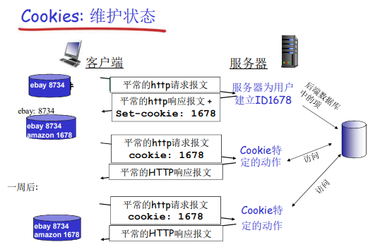

HTTP_Server
Web服务器是基于HTTP实现的，而HTTP协议是运行在TCP之上的。所以在创建TCP连接这个过程是与C/S的过程是相似的。
1 | //创建服务 |
Web接收到的信息是去掉TCP的头部，但是还有HTTP的头部。Web则是根据该头部的信息进行逻辑控制。一个Web服务器支持多个客户端，不同的套接字可以使用相同的端口号。
需要自己去解析HTTP的头部，来判断接下来服务器的动作。
根据HTTP头部的格式，我们一行行的读取信息
1 | // 读取套接字的一行，把回车换行等情况都统一为换行符结束。 |
读取到信息后，需要判断请求的方法为POST还是GET，HTTP的版本，请求的文件是否存在等。
如果进行顺利，我们需要向客户端发送响应同时发送请求的信息。
通过HTTP的GET的方法，将输入的数据作为参数添加在URI后面发送给服务器。而POST则将数据放在HTTP请求消息的消息体中发送给服务器。
HTTP/1.0使用非持久连接
HTTP/1.1使用持久连接
非持久连接：Web服务器在发送一个对象资源就要使用一个TCP连接。最多只有一个对象在TCP连接上发送。下载多个对象需要多个TCP连接。
持久连接:多个对象可以在一个TCP连接上传输
比如：
当请求的默认网页中含有图片等对象，这是默认网页就不只有一个对象了。非持久连接则会发生多次的HTTP连接的过程，也就每个对象都花费一个RTT（往返时间）。持久连接一次请求完所有对象（客户端遇到一个引用对象就立即产生一个请求），所有的引用可能花费一个RTT。引用是在网页中的。
200 OK ： 请求成功，请求对象包含在响应报文的后续部分
301 Moved Permanently ：请求的对象已经被永久转移了；新的URL在响应报文的Location:
首部行中指定；客户端软件自动用新的URL去获取对象
400 Bad Request： 一个通用的差错代码，表示该请求不能被服务器解读
404 Not Found ： 请求的文档在该服务上没有找到
505 HTTP Version Not Supported
上述的Web服务器是无法支持维护用户的状态的。比如我们平常的网络购物，购物车，历史记录等。则使用一个Cookies来维护状态。
HTTP的请求报文和响应报文中都有一个cookies的首行
用户端系统中保存有一个cookies文件，有用户浏览器管理
在Web站点有一个后端数据库
cookies的运行过程

Web缓存
如果每个客户端都访问一个Web服务器，那么他的载荷太大，容易崩溃的。怎样不访问原始服务器，就满足客户的请求。就出现了Web缓存。
好处：
降低客户端的请求响应时间
减少一个机构内部网络与Internet接入链路上的流量

客户端请求的对象在缓存器中不是最新的，则转向原Web服务器。原Web服务器把对象发送给客户端，同时更新缓存器中的对象。是通过HTTP头部中last-modified字段来判断的
缓存器
本博客所有文章除特别声明外，均采用 CC BY-SA 4.0 协议 ，转载请注明出处！